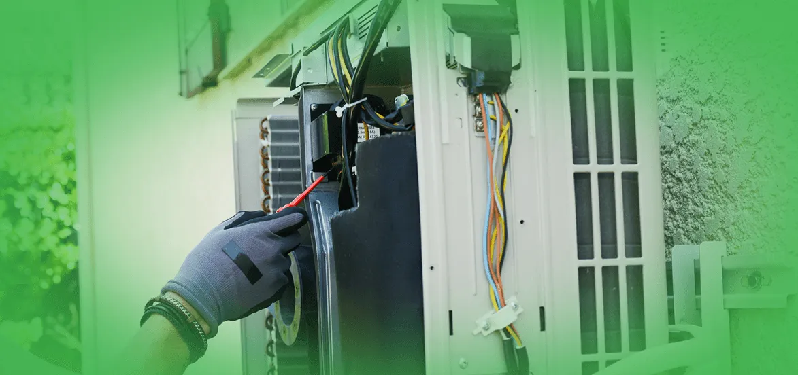

How To Fix Your Air Conditioner In 24 Hours Or Less?
Publish Date : 2025-02-18
Views : 1200

Since air conditioning systems are highly sophisticated, it is no wonder that they can fail in a variety of ways. Many of them will require expert care, even if you can fix one with the lesser issues. This week on our blog, we will go through some of the most prevalent flaws, as well as what to do if you come across them. Warm Air From Your Air Conditioner Do not be alarmed if your air conditioner is producing warm air. As the most common air conditioning problem, there are a variety of plausible explanations, so it is very likely that you may address it quickly. Make Sure Your Thermostat Is In Good Working Order It may seem self-evident, yet you would be shocked how often this is the case! It could be set too high, or someone at work may have changed it without your knowledge. If your thermostat is programmed, double-check that it is not utilizing energy inefficiently. Remember that every point you can the temperature saves you roughly 3% on your air conditioning bills – and finding the ideal office temperature may need some trial and error. A Dirty Filter Could Be In Your System Filters can readily become blocked with dirt and dust, limiting airflow and negatively affecting the unit's efficiency. It is one of the numerous reasons why air conditioners need to be serviced and maintained on a regular basis. Possible Leakage From The Refrigerator The chemical that your air conditioner needs to cool the air is called refrigerant, and if there is not enough of it, it can cause major problems with the unit's overall performance. Examine the larger of the two copper wires that run into the condenser to see if this is the case. The tube will sweat and feel extremely cold if the refrigerant levels are adequate. If it does not, it is most likely a sign of a more severe underlying issue. However, this is not a comprehensive list of potential reasons; but it is a review of the most prominent options. If you do not get a solution or are still unclear about what to do, we strongly advise contacting a competent technician for Emergency AC Repair Services. The Air Conditioner Isn’t Evenly Cooling The Room While external circumstances can cause this, such as part of the room being in the shade, whereas the other is drenched in sunlight. Sometimes the contrast can be significant enough for you to feel, particularly if you cannot feel any cool air from the air system. Blocked Vents Or Leaks This issue that is caused by leakage in the ductwork serving separate rooms can sometimes be an indication of bad installation. Poorly insulated walls, on the other hand, can create this. Unless you can instantly identify the problem to be a blocked vent, consulting a specialist in AC Installation Service is your best bet. An Unusual Noise Is Coming From Your Air Conditioning Unit Another common concern, and regrettably, is frequently a strong indicator of a serious problem in your system. Again, there are a variety of possible reasons. However, the technicians most of the time discover that it's due to a motor bearing issue or a bad internal belt (particularly if the sound is squealing or screeching). We highly urge you against attempting to resolve this issue on your own, as you may put yourself in danger of damage. Instead, ensure the system is turned off and promptly contact an engineer, who will be able to detect the problem much more swiftly and safely.
What Can You Do To Avoid Air Conditioner Problems?
Filters For Air Conditioners The most crucial maintenance activity for ensuring your air conditioner's efficiency is to change or clean its filters on a regular basis. Filters that are clogged or unclean prevent normal airflow and greatly diminish a system's efficiency. Because it impedes normal airflow, dirt may be carried directly into the evaporator coil, reducing the coil's heat-absorbing capability. Replacing a filthy, clogged filter with a fresh one can reduce the energy usage of your air conditioner by 5% to 15%. Filters for air conditioners are usually positioned somewhere along the length of the return duct. Filters are commonly found in walls, ceilings, furnaces, and even the heating system itself. A filter is positioned in the grill of an air conditioner that faces into the room. You can reuse some filters, while others need to be changed. They come in a range of shapes and sizes, as well as different levels of efficiency. During the cooling season, cleaning or replacing the air conditioner's filter or filters each month or two is inevitable. If the air conditioning system is in continual use, it is subjected to dusty circumstances, or you have fur-bearing dogs in the house, filters may require more frequent care. Air Conditioner Coils The evaporator coil and condenser coil of an air conditioner acquire dirt after weeks and months of use. The evaporator coil is less likely to become dirty if the filter is kept clean. The evaporator coil, on the other hand, will continue to gather dirt over time. This dirt obstructs circulation and insulates the coil, lowering its heat-absorbing capacity. Check the evaporator coil once a year and clean it as needed to avoid this issue. If the outdoors is dusty or there is greenery around, outdoor condenser coils could become exceedingly unclean. The condenser coil is plainly visible, and you can detect if dirt has accumulated on its fins. It is best to keep dirt and debris away from the condenser. Dirt and debris might come from your dryer vents, rustling leaves, and the lawnmower. Allow for sufficient airflow all around the condenser by cleaning around the coil, eliminating any trash, and pruning foliage back at least 2 feet (0.6 meters). Remove The Cover From Your Air Conditioning Unit People take refuge from their air conditioning units when the weather heats up. However, many individuals make the error of forgetting to take the cover from their air conditioner before turning it on. If you ignore this simple step in preventing air conditioner damage and switch on the air conditioner while it is sealed, the machine will quickly overheat. If parts are ruined as a result of the overheating, this is typically a costly mistake. In rare circumstances, the damage necessitates the replacement of the air conditioning system. Coil Fins Evaporator and condenser coils' aluminum fins are readily bent and can obstruct airflow. A tool called a "fin comb" is sold by air conditioning wholesalers to comb these fins back into virtually original shape. Drains For Condensate Pass a strong wire through the drain passages of the unit every now and then. When drain channels are clogged, a unit's ability to reduce humidity is compromised, and the extra moisture that results can stain walls or carpet. Inspect The Furnace Filters On A Monthly Basis Checking your HVAC unit's air filter once a month is one of the simplest techniques we know of to avoid air conditioner damage. This keeps your air conditioner running efficiently and enhances the quality of your interior air. However, this is a basic air conditioner maintenance task that you may undertake on your own. First, identify any debris or dust ethat has accumulated in the filter. Replace it with a new filter if there is a substantial amount. When purchasing a new heater filter, make sure you receive the correct filter kind as well as the correct size. Fiberglass, pleated, and media filters are all types of furnace filters. When done correctly, furnace filter maintenance preserves the HVAC system's energy efficiency and avoids excessive wear and tear. When your filter becomes clogged, your system has to work more to push air through it in order to heat or cool your house. This puts a strain on the system, causing it to deteriorate more quickly. It also consumes more energy, resulting in higher utility bills. Lastly, it hastens the occurrence of more repairs and even failures. Room Air Conditioner Window Seals Examine the seal between the air conditioning unit and the window frame at the start of each cooling season to guarantee it comes into contact with the unit's metal case. Moisture can cause this barrier to deteriorate, enabling cool air to escape your home. Winter Preparation In the winter session, either wrap or remove and store your room air conditioner. A central air conditioner's external unit can be protected from cold weather and debris by covering it. Clean An Outdoor Unit Of Debris In The Area When branches, dirt, pollen, and other debris gather on outdoor AC compressors, they lose airflow and consequently energy consumption. However, this is because blocked air conditioner vents cannot effectively circulate air. Also, it makes the unit work more to provide the same cooling effects, similar to a dirty exhaust system. Debris collects on air conditioner coils as well. The insulating effect of dirty air-con coils is created. As a result, the unit has a difficult time venting heat from your home to the outside. Perform a fast check surrounding your AC condenser when you are in your yard or after a heavy storm. So, please, keep a close check on the condenser during the autumn months, when the leaves are dropping. Also, from winter to spring, when the weather changes. After the ice melts, be wary of ice on your air conditioner. Air-conditioning Service On A Schedule Proactive aircon maintenance is the final recommendation for avoiding air conditioner damages. While there are many DIY options available, some difficulties will require the services of a cooling system specialist. You may detect minor air conditioner issues, but do not take them for granted. Schedule monthly maintenance with a professional Emergency Ac Repair Services firm before they become more expensive solutions. However, this allows you to save money and prevents you from paying heavy air conditioner maintenance later.Getting Professional Help
Hire a qualified service expert if your air conditioner requires more than routine maintenance. Your air conditioning unit will be diagnosed and repaired by a certified professional. The Technician Should Be Able To:- Verify that the amount of coolant is correct.
- Use a leak detector to check for refrigerant leakage
- Instead of unlawfully discharging any gas that must be removed from the system, capture it.
- In central systems, examine and seal duct leaks.
- Take a reading of the airflow through the evaporator coil.
- Confirm that the electric control cycle is proper and that the heating and cooling systems are not operating at the same time.
- Examine electric connections, clean and adjust interconnections, and, if needed, apply a non-conductive covering.
- Lubricate the motors and inspect the belts for stiffness and wear.
- Verify the thermostat's correctness.
Call EZ Heat And Air For Quality Air Conditioning Repair Services
If your air conditioner goes down during a heat wave, you will be glad you collaborated with an ac repair company like EZ Heat And Air that can have your air conditioner fixed quickly. We have invested heavily in cars, staff, equipment, and inventory to ensure that we can respond swiftly to any air conditioning repair need. We will definitely contact you back, and we will do everything we can to accommodate your hectic schedule. When our certified technicians arrive on the site, they will assess the issue and resolve it in the quickest time possible without compromising quality. Our technicians can work on almost any brand of air conditioning unit, and same-day after-hours/weekends emergency servicing is indeed available to address air conditioner issues in a crisis.We Are A Seasoned AC Repair Company
Choosing the appropriate air conditioner repair firm will help you save money on repairs, improve your convenience, and extend the life of your equipment. Before you hire an HVAC contractor, think about the following:- Certified Experts: Our service technicians have undergone extensive certification. As part of our dedication, our workers also attend factory-sponsored training courses on a regular basis.
- Communication and Availability: We understand how frustrating it is to be unable to contact your provider to schedule a repair appointment during inclement weather. You have an obligation to anticipate your contractor to respond quickly and accurately to your equipment issues.
- Air Conditioning Maintenance: We offer seasonal scheduled maintenance that is adaptable. Preventive maintenance will increase comfort, save repair costs, and extend the life of your ac unit. A spring tune-up will assist uncover small issues before they impede your air conditioner's effectiveness in hot weather.
Quality Services At Affordable Rates For All Types Of Air Conditioners
Call the experts at EZ Heat And Air Services if your central air conditioner requires servicing or rebuilding. One of our in-home advisors will respond to your concerns and set up an appointment at a time that is convenient for you. So, why wait? Call EZ Heat and Air experts now!Category